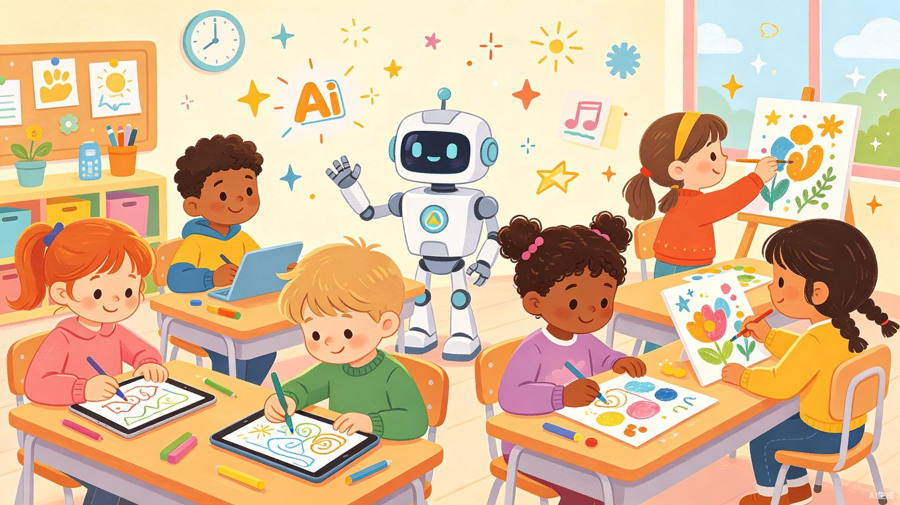
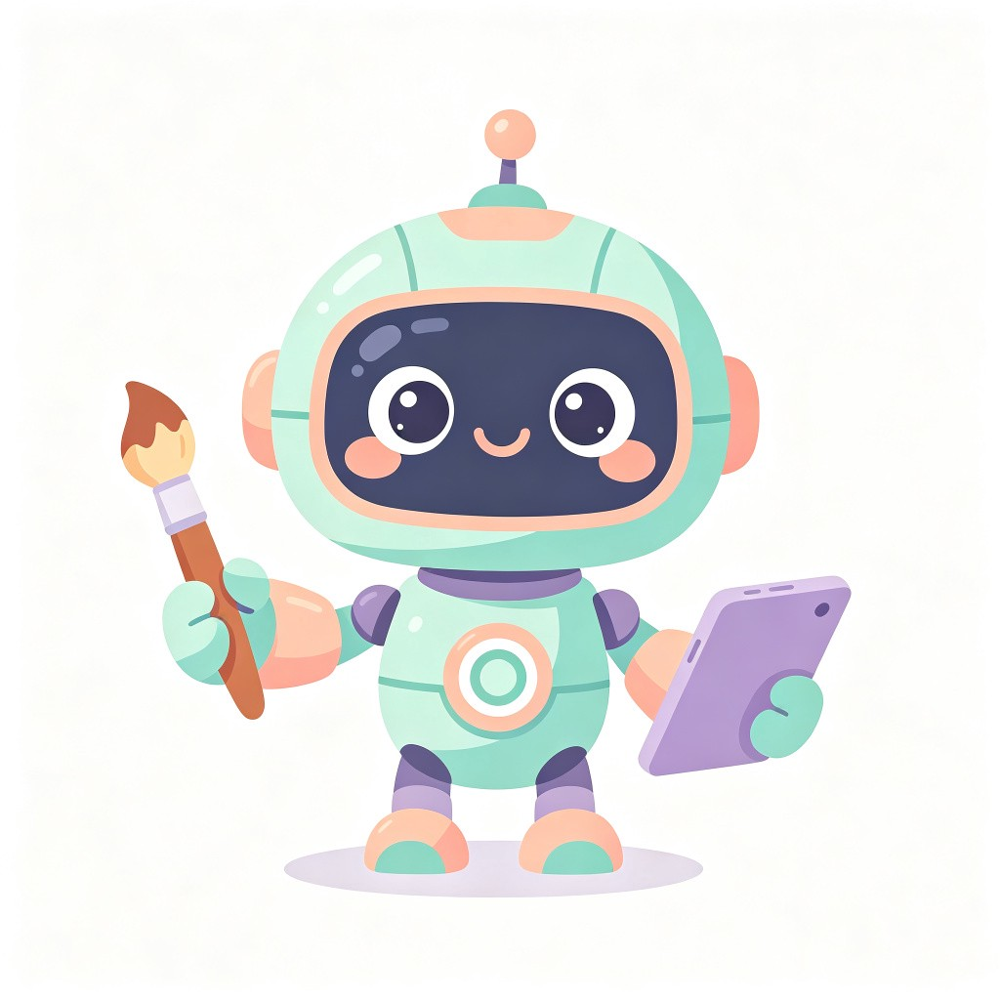
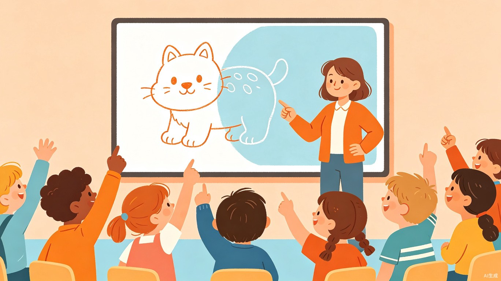
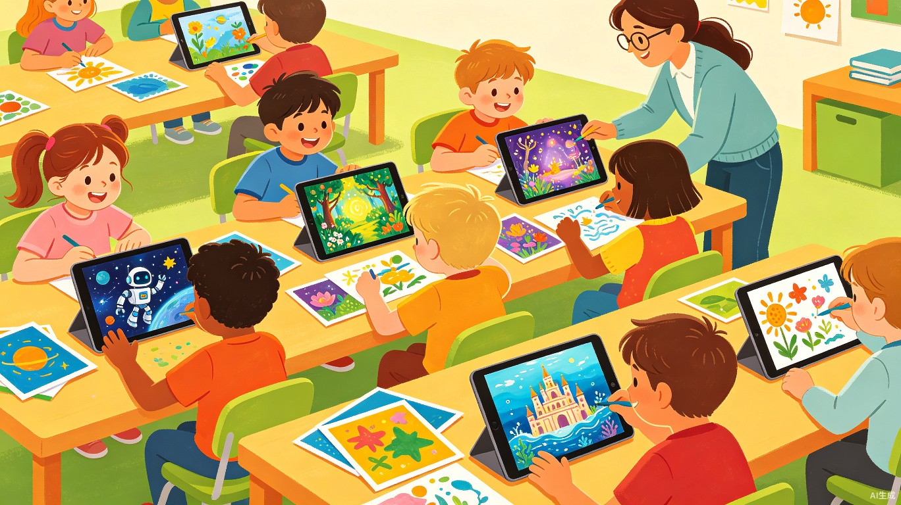
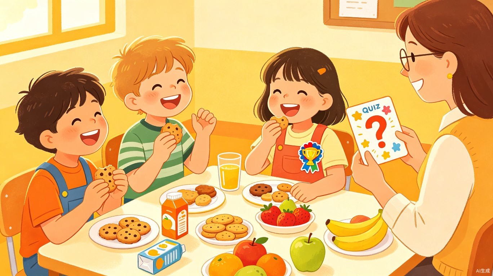
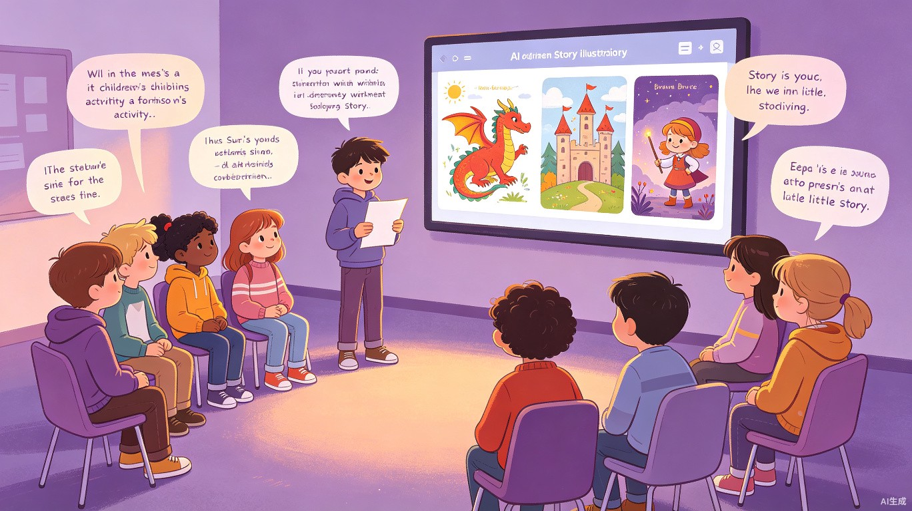
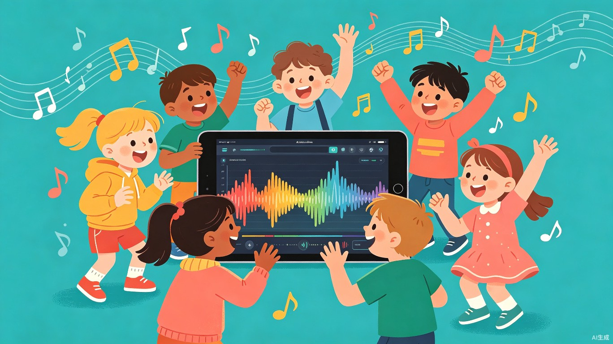
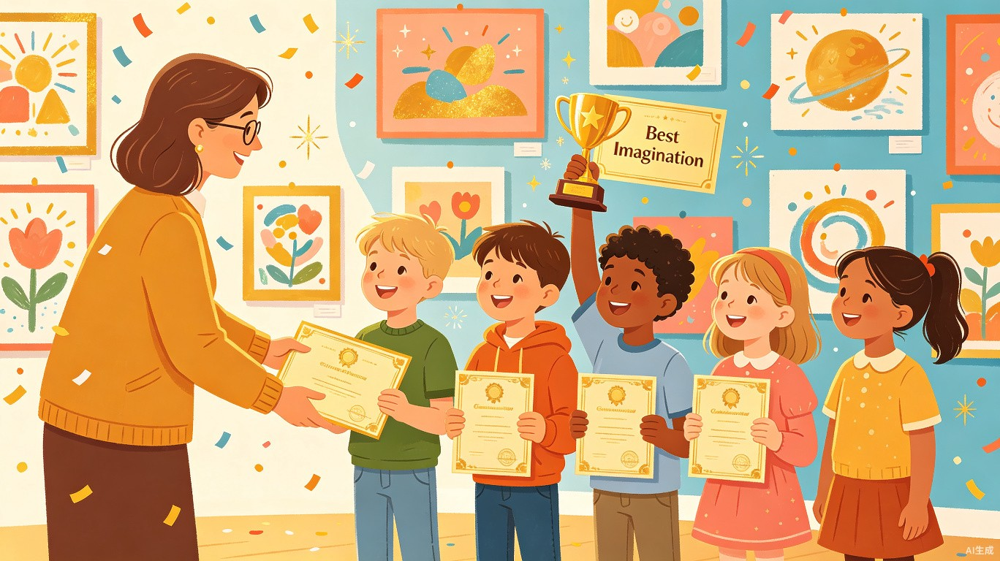
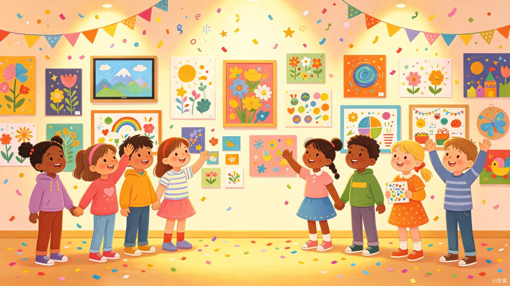

和 AI 一起，让想象力飞翔!
这是一个专为 6-12 岁小朋友设计的半日即兴创作活动。只需要一台电脑和投影仪，老师带着孩子们一起探索 AI 的奇妙世界!画画、讲故事、编音乐，全程纯数字化，每一个环节都充满惊喜和创意火花。无需任何基础，带上好奇心出发就好!
活动日程安排
🎨
9:00 - 9:20
破冰热身: AI 画画猜猜看
20 分钟

活动以一个有趣的互动游戏开场!老师用 AI 生成一些"半成品"画作(比如只有轮廓的动物、缺失颜色的风景)，让小朋友们抢答猜猜 AI 画的是什么，然后大家一起给 AI 提示词，让它把画作"补完"。每位小朋友都有机会上台给出创意指令，感受"和 AI 协作"的第一份快乐。
查看活动详情与操作指南 →
✨
9:20 - 9:50
灵感激发: "如果世界变了样" 脑洞时刻
30 分钟

小朋友们围坐一圈，老师抛出一个脑洞大开的"如果"问题，比如"如果动物会说话，你最想和谁聊天？""如果天上下的是糖果雨，你的城市会变成什么样？"孩子们轮流口头描述脑海中的画面。AI 工具会实时把小朋友们的描述转成小插画投在大屏幕上，让想象力变得"看得见"!
查看活动详情与操作指南 →
🎨
9:50 - 10:40
AI 绘画工坊: 我的第一幅 AI 画作
50 分钟

小朋友们在老师的电脑前围成一圈，学习如何用简单的词语描述自己想象中的画面。小朋友们轮流口述自己的创意，老师在现场输入提示词，AI 即时生成画作并投屏展示。每个孩子都能看到自己的想法变成精美画作!老师选取最佳作品打印出来，让大家一起欣赏。
查看活动详情与操作指南 →
🍫
10:40 - 10:55
能量补给站: 小小 AI 知识问答 + 小食时间
15 分钟

休息时间!小朋友一边享用健康小点心，一边参与轻松有趣的 AI 知识小问答 -- "AI 能听懂我们说话吗？""AI 会画画吗？""AI 有感情吗？"答对的小朋友会获得可爱的"AI 小达人"贴纸奖励。这个环节不仅放松身心，还能激发孩子们对科技的好奇心。
查看活动详情与操作指南 →
📖
10:55 - 11:35
AI 故事创作: 接力编故事
40 分钟

全班分成 3-4 个小组，每个小组用"故事接力"的方式合作创作一个故事:第一个小朋友说开头，第二个小朋友加入新角色，第三个小朋友制造转折...AI 会实时记录并生成故事配图。完成后，AI 还会帮忙给故事加上标题和结尾!每个小组选一位"小作家"上台朗读，配上 AI 生成的插画，仿佛在举办一场小型故事发布会。
查看活动详情与操作指南 →
🎶
11:35 - 11:50
彩蛋环节: AI 音乐实验室
15 分钟

给小朋友一个惊喜!使用 AI 音乐工具，让每个小组为自己的故事创作一首专属主题曲。孩子们可以选择音乐风格(欢快的、神秘的、梦幻的...)，输入故事主题关键词，AI 就会即时生成一段原创旋律。大家一起听、一起评价、一起嗨!
查看活动详情与操作指南 →
🏆
11:50 - 12:00
作品发布会: 创意大展 + 颁奖典礼
10 分钟

活动的高潮时刻!所有小朋友的 AI 画作和故事都被展示在"创意画廊"上(可以是教室墙面的大展板)。每个孩子上台简单介绍自己的作品，大家互相欣赏和投票。老师为每位小朋友授予"AI 小创作家"电子称号，并评选出"最佳脑洞奖""最美画作奖""最棒故事奖"等趣味奖项。带着满满的成就感和作品回家!
查看活动详情与操作指南 →
组织者小贴士
1
提前测试所有 AI 工具
活动前一天务必测试网络环境和 AI 工具是否正常运行，准备好离线备用方案(如预生成好的示例图片)，避免现场手忙脚乱。
2
准备内容安全过滤器
使用 AI 生成内容时，务必开启内容过滤功能，避免生成不适宜儿童的内容。建议使用专为教育场景设计的 AI 工具。
3
灵活调整节奏
小朋友的注意力集中时间有限，如果某个环节孩子们特别投入，可以适当延长;如果出现疲态，果断进入下一个环节或休息。
4
关注每个孩子的参与感
内向的孩子可能不太愿意上台展示，可以通过小组合作或书面表达的方式让他们参与。重要的是让每个孩子都感受到创作的乐趣。
所需材料清单
一台电脑
老师操作用，连接投影仪即可，预装 AI 工具
投影仪 / 大屏幕
用于展示 AI 生成的作品，投屏互动

每个孩子都是天生的创作者!
活动结束后，所有作品电子版将发送给家长，留下珍贵的创作回忆。